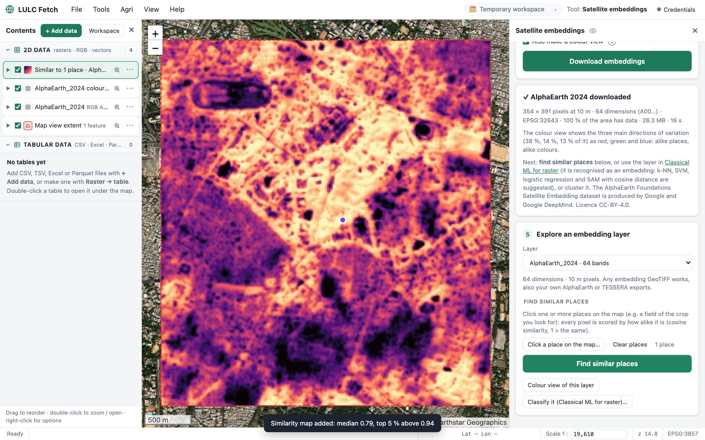

From satellite images to maps you can trust
Every screenshot is LULC Fetch working on real data: Sentinel-2 over Bengaluru, NAIP aerial imagery, AlphaEarth embeddings.
One click from image to map
Pick an image and its ground truth (polygons, points or a land-cover raster), choose a model, and get a classified map with a confidence layer and a full accuracy report.
- Detects RGB, multispectral, hyperspectral, SAR and pixel embeddings, and suggests suitable models
- SVM (RBF / linear), Maximum Likelihood, Spectral Angle Mapper, Minimum Distance, Random Forest, XGBoost …
- PCA band reduction for 100+ band hyperspectral data

30 indices, checked for you
Vegetation, water, built-up, burn, snow and radar indices in one click, or type your own formula. LULC Fetch reads band names, warns when a band is missing, and converts raw values to reflectance automatically.

Know how good your model really is
Every trained model comes with a stand-alone HTML report you can share or print: overall accuracy, kappa, confusion matrices with producer's and user's accuracy, per-class scores, ROC and precision–recall curves, calibration and feature importance.

Find natural groups, no labels needed
Six clustering methods with automatic choice of the number of clusters, quality scores, cluster profiles and comparison with known labels. Save a clustering as a model to make an unsupervised land-cover map.

Train a U-Net in minutes, and watch it learn
Turn your image and ground truth into patches with Make training data, pick an architecture and a backbone from the dropdown, and train. Loss and mIoU curves update after every epoch; early stopping keeps the best model, and Cancel never throws work away.
- U-Net, U-Net++, DeepLabV3 / V3+, PSPNet, FPN, LinkNet, SegFormer, FCN, LR-ASPP
- ImageNet-pretrained backbones adapted to any number of bands
- Spatial-block validation, Dice / focal losses and class weights for rare classes

See what the network gets right, and wrong
Every model gets a one-file HTML report: mIoU, pixel accuracy, kappa, training curves with the best epoch, confusion matrices, IoU and F1 per class, and example patches shown as image, ground truth and prediction side by side.

Count every car, ship and plane in an aerial image
Detect object searches the whole image tile by tile and joins objects cut by tile edges back together. Here YOLO26, pretrained on the DOTA aerial dataset, finds 858 vehicles, ships and more in 4 seconds on a 0.6 m NAIP image of Seattle, with no training.
- YOLO26 (boxes, outlines, rotated boxes), Faster R-CNN, RetinaNet, FCOS, SSD, Mask R-CNN
- SAM 2.1: outline any detected object, or segment everything
- Train detection model: your own classes from labelled polygons or points

Click a place, find every place like it
The Embeddings menu downloads free AI embeddings for your area straight from Google AlphaEarth or TESSERA: every 10 m pixel becomes a vector that sums up a whole year of satellite data. Click a place and LULC Fetch scores every pixel by how alike it is. Here: one click on a place in central Bengaluru, and every pixel that is alike lights up, from 13 km² of AlphaEarth downloaded in 16 seconds.
- See which years (2017–2025) exist for your area before downloading
- A colour view (PCA) shows fields, crops, water and built-up areas at a glance
- Classify or cluster the embeddings with the other tools; a few labelled points are enough

Edit tables like in a GIS, or with Python
Open any table or attribute table under the map. Add fields with the calculator (including polygon area and perimeter), edit cells, or run pandas code. Changes stay in a working copy until you choose to save or discard them.